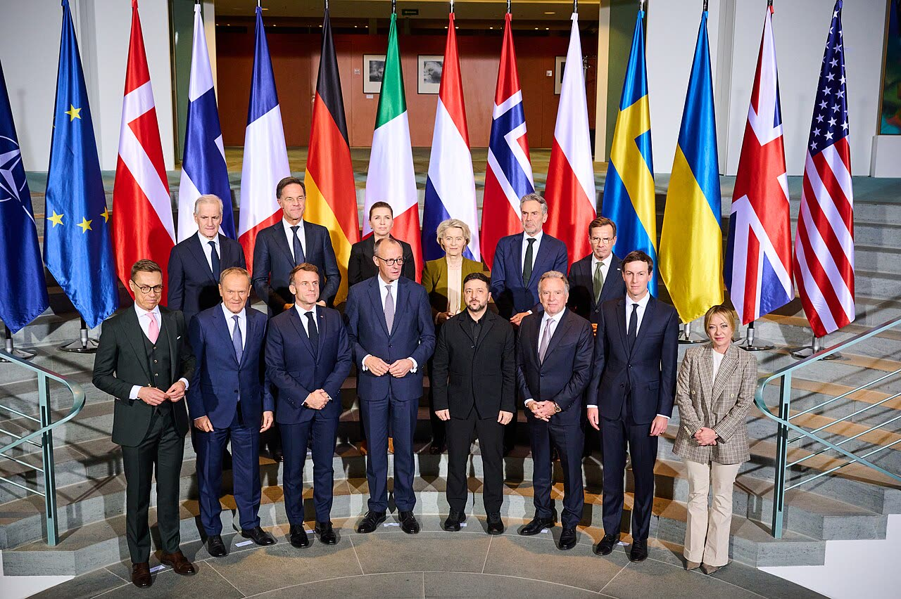

Ucraina, l'Ue sceglie chi tratta per l'Europa: cinque paesi, Italia compresa
Il gruppo era già quello di Abu Dhabi: la partita vera è il mandato, e al Consiglio del 26-27 novembre Roma lo pretenda prima di parlare dei soldi a Kiev.
Redazione Contrappunto · aggiornato il 14.11.2026

.jpg){kind=link}
Venerdì 13 novembre 2026 a Dublino i leader dei 27 paesi dell'Unione europea hanno deciso chi rappresenterà l'Europa nei negoziati sulla fine della guerra in Ucraina, che finora si sono tenuti tra Stati Uniti, Russia e Ucraina: le istituzioni Ue più cinque paesi, Francia, Germania, Regno Unito, Italia e Polonia. Sabato 14 il Cremlino ha detto che non pone condizioni sulla squadra. La decisione risponde alla lettera con cui il 5 novembre Giorgia Meloni chiedeva di stabilire chi parla per l'Europa e con quale mandato; della lettera e del sì di Putin raccontato dagli americani abbiamo scritto il 6 e il 13 novembre. Conta perché chi siede al tavolo può prendere impegni su soldi, garanzie e sanzioni che poi pagano anche gli italiani.
Vedi di più: 11 parole spiegate, cosa si racconta
Cosa si raccontaLe testate italiane raccontano un successo di Roma: ANSA titola che Meloni «incassa il posto negli E5», il Quotidiano Nazionale che l'Italia ottiene un posto al tavolo, il Secolo d'Italia che a Dublino passa la linea italiana, e il ministro Foti sul Giornale parla di doppia vittoria. Sulla Russia Leggo titola che il Cremlino dà il via libera; Kulturjam, a sinistra, scrive il contrario, che Mosca non riconosce la delegazione. Il Post legge la squadra come un ripiego: il delegato unico non c'è perché Francia e Germania non lo volevano. [ANSA] [Quotidiano Nazionale] [Secolo d'Italia] [il Giornale] [Leggo] [Kulturjam] [Il Post]
- E5
- Il nome che Costa usa per i cinque paesi della Coalizione dei volenterosi entrati nella squadra: Francia, Germania, Regno Unito, Italia e Polonia. Il Regno Unito non fa parte dell'Ue.
- E3 ed E4
- E3 sono Francia, Germania e Regno Unito, il gruppo che finora ha guidato i contatti europei con Washington; con l'Italia, presente ad Abu Dhabi il 10 novembre, si parla di E4.
- Coalizione dei volenterosi
- Il gruppo di paesi, guidato da Francia e Regno Unito, che lavora alle garanzie di sicurezza per l'Ucraina dopo un eventuale cessate il fuoco.
- Consiglio europeo informale
- Riunione dei capi di Stato e di governo dei 27 senza conclusioni formali; quella di Dublino del 13 novembre seguiva il vertice della Comunità politica europea del 12, che riunisce anche paesi non Ue.
- Istituzioni Ue
- Qui la Commissione europea, presieduta da Ursula von der Leyen, e il Consiglio europeo, presieduto da António Costa, che riunisce i capi di governo.
- Mandato negoziale
- Le istruzioni che dicono a chi tratta cosa può offrire e accettare a nome di chi rappresenta: senza, ogni impegno va ricontrattato con i governi.
- Consigliere diplomatico
- Il diplomatico che consiglia il presidente del Consiglio sulla politica estera. In Italia non esiste una carica di consigliere per la sicurezza nazionale come negli Stati Uniti; nei formati internazionali il consigliere diplomatico siede con i consiglieri per la sicurezza degli altri paesi.
- Colloqui di Abu Dhabi
- Il round tra le delegazioni di Stati Uniti, Russia e Ucraina del 10 e 11 novembre negli Emirati Arabi Uniti, il primo da circa nove mesi; gli europei hanno incontrato americani e ucraini, non i russi.
- Witkoff e Kushner
- Steve Witkoff e Jared Kushner, gli inviati del presidente americano Donald Trump nei negoziati; il 12 novembre hanno visto Putin a Mosca e poi Zelensky e i consiglieri europei vicino a Dublino.
- Peskov
- Dmitry Peskov, portavoce di Vladimir Putin.
- Alta rappresentante
- La responsabile della politica estera dell'Ue, oggi l'estone Kaja Kallas.
- Venerdì 13 novembre a Dublino i leader Ue hanno deciso che a trattare sull'Ucraina per l'Europa saranno le istituzioni Ue e cinque paesi, Italia compresa: a livello di consiglieri, senza negoziatore unico e senza mandato.
- Per l'Italia, secondo ANSA, ci sarà Fabrizio Saggio, consigliere diplomatico di Meloni, che il 10 novembre ad Abu Dhabi era alla riunione con americani e ucraini, senza i russi.
- Il Cremlino non pone condizioni sulla squadra e non ha obiezioni agli europei, ma rinvia la decisione sul tavolo allargato.
Il coro italiano racconta una vittoria: ANSA titola «Meloni incassa il posto negli E5», il Secolo d'Italia «A Dublino passa la linea italiana», Foti di doppia vittoria, formato comune e Italia al tavolo. La squadra c'è, e l'Italia ci sta. Ma il gruppo era già quello di Abu Dhabi, dove il 10 novembre Fabrizio Saggio, consigliere diplomatico di Meloni, vedeva americani e ucraini, senza i russi (AGI). La novità è la designazione a entrare nei negoziati veri, se Mosca accetta, più la Polonia. [6] [9] [10] [15] [7]
Meloni chiedeva chi parla per l'Europa e con quale mandato, e avvertiva che l'Italia non avrebbe accettato impegni presi senza un mandato Ue concordato (Kyiv Post, Brussels Signal). Molti l'hanno letta come un negoziatore unico: per ANSA «resta una chimera», per Il Post l'hanno frenata Parigi e Berlino. Il mandato non c'è: Palazzo Chigi lo chiama seconda fase. Il titolo del Secolo non regge. [18] [19] [6] [7] [2] [9]
Al tavolo vanno consiglieri, a livello tecnico per un funzionario anonimo sentito da Bloomberg. Sei o sette, secondo come si contano i delegati Ue, e senza data ufficiale per il prossimo round. Peskov non ha obiezioni né condizioni sulla squadra, ma rinvia la decisione sul tavolo allargato; Leggo titola che il Cremlino dà il via libera. A sinistra, su Repubblica, Fatto, manifesto e Domani non abbiamo trovato articoli. [22] [23] [6] [24] [1] [13]
Il nostro punto. Per l'Italia è un risultato difensivo: evita di restare fuori dal club di Parigi, Berlino e Londra, ma non ottiene ciò che chiedeva. Cinque governi sono meglio di un inviato di Bruxelles. Però senza mandato pesa chi ha dato di più: la Germania, scrive Il Post, oltre 40 miliardi in aiuti militari. E per ANSA il cambio di marcia di Meloni può far crescere molto gli aiuti italiani. [7] [6]
Quindi, come ieri: il 26-27 novembre, al Consiglio sui soldi a Kiev per il 2027, Roma chieda prima un mandato scritto dai governi all'unanimità, con dentro il dialogo con Mosca sulla sicurezza, e solo dopo voti il conto. La sicurezza europea è già sul tavolo, la chiedono Mosca e Kushner: se l'Europa non ne parla, decidono Washington e Mosca, e paghiamo anche noi. [1] [16] [15] [28]
La verifica punto per punto19 passaggi, 28 fonti
Qui sotto ogni cosa scritta sopra, una per una, con le fonti. Confermato: lo dice un documento originale o più fonti lette. Plausibile: lo riportano fonti serie, ma non abbiamo letto l'originale. Discordante: le fonti danno numeri diversi, e diciamo quali. Ipotesi e Opinione sono il nostro ragionamento, separato dai fatti.
La notizia · cosa hanno deciso a Dublino
Il 13 novembre, al Consiglio europeo informale di Dublino, i leader hanno deciso che a rappresentare l'Europa nei negoziati sull'Ucraina sarà una squadra: le istituzioni Ue (Commissione e Consiglio europeo) più l'E5, cioè Francia, Germania, Regno Unito, Italia e Polonia. Lo hanno detto Costa e von der Leyen in conferenza stampa e il primo ministro polacco Donald Tusk, per cui non si è votato.
Costa difende la squadra: anche gli Stati Uniti hanno due inviati, l'Ucraina tre o quattro. Von der Leyen: decidiamo noi chi ci rappresenta.
Al tavolo andranno consiglieri e funzionari, non capi di governo: Bloomberg (via Meduza), ANSA, Il Post. Un alto funzionario europeo, anonimo, ha detto a Bloomberg che parteciperanno a livello tecnico.
Nessun documento ufficiale dà il numero. Sei per il New York Times e per Bloomberg, che contano le istituzioni Ue come un posto solo; sette per ANSA e Il Post, che contano due delegati Ue con nome. Foti aggiunge la Nato, che una fonte diplomatica esclude.
I nomi non sono ufficiali. Per l'Italia, secondo ANSA, ci sarà Fabrizio Saggio, che per l'elenco della Farnesina è il consigliere diplomatico del presidente del Consiglio; AGI lo chiama consigliere per la sicurezza nazionale. Per le istituzioni Ue, sempre secondo ANSA, Björn Seibert, capo di gabinetto di von der Leyen, e Anna-Maria Boura, consigliera di Costa.
Resta fuori Kaja Kallas, l'Alta rappresentante Ue per la politica estera, che chiedeva il ruolo per sé.
Il posto dell'Italia · c'era già
Il gruppo non nasce a Dublino. Il 9 novembre Euronews annunciava l'Italia ad Abu Dhabi con E3 e istituzioni Ue; il 10 Saggio era alla riunione con americani e ucraini, ma senza i russi (AGI), che rifiutarono gli europei al tavolo (RTÉ). Secondo QN l'invito all'Italia era arrivato dagli Stati Uniti.
Per ANSA è un formato collaudato, più la Polonia, che Tusk presenta come un successo. Per Il Post la differenza è il mandato ufficiale a entrare nei negoziati principali, a cui gli europei non hanno mai partecipato; ANSA: con gli Usa e, forse, con la Russia.
Cosa chiedeva Meloni · e cosa non è passato
Nella lettera del 5 novembre a Costa Meloni chiedeva di decidere chi rappresenta l'Ue e con quale mandato, e avvertiva che l'Italia non avrebbe accettato impegni presi senza un mandato concordato. Escludeva di chiedere un posto per l'Italia o per sé. Palazzo Chigi, il 10, puntava a una decisione al Consiglio europeo di dicembre; la squadra è arrivata prima, a Dublino.
Molte testate l'hanno letta come richiesta di un negoziatore unico (Euronews, Brussels Signal). Quel negoziatore non c'è: lo scrivono ANSA, QN, Il Post e Kulturjam. Per Il Post l'hanno frenato il presidente francese Emmanuel Macron, che voleva prima i contenuti, e il cancelliere tedesco Friedrich Merz.
Il mandato non c'è ancora: per Palazzo Chigi è la seconda fase, quella del mandato politico e negoziale. Meloni parla di un risultato nella direzione tracciata.
ANSA titola che Meloni incassa il posto; il Secolo d'Italia che passa la linea italiana, ma nello stesso pezzo ricorda il solo negoziatore, che non è passato. Per il ministro per gli Affari europei Tommaso Foti (il Giornale) è una doppia vittoria: formato comune e Italia al tavolo.
Mosca · nessuna condizione, nessun impegno
Sabato 14 il portavoce del Cremlino Dmitry Peskov ha detto al canale Telegram Yunashev Live che Mosca non pone condizioni sulla squadra europea (TASS, Anadolu); per TASS ha aggiunto che è meglio parlare con gli europei. Già prima, secondo Meduza (da Bloomberg), non aveva obiezioni alla partecipazione europea.
Che Putin abbia accettato gli europei lo dicono gli americani. Il 13 Peskov rinviava la decisione sul tavolo allargato a quando Mosca avrà capito le intenzioni europee, aperto intanto a contatti con l'Europa (RTÉ). Leggo titola che il Cremlino dà il via libera; Kulturjam scrive che Mosca non riconosce la delegazione.
La prossima tappa
Il Consiglio europeo del 26-27 novembre, diverso da quello di dicembre indicato da Chigi, parlerà dei soldi a Kiev per il 2027, su proposta della Commissione. Per il mandato le fonti lette non danno una data. Il prossimo round non ha data ufficiale: Kushner annuncerà il calendario a breve; Abu Dhabi, la prossima settimana per RTÉ, fra due settimane per ANSA.
Tra le righe
Per l'Italia è un risultato difensivo: resta nel gruppo con Parigi, Berlino e Londra, ma non ottiene né il negoziatore unico che molti le attribuivano né il mandato.
Ragionamento: Il posto c'era già ad Abu Dhabi (Euronews, AGI); ANSA scrive che Meloni temeva di restare fuori dagli E3; il mandato è rinviato alla seconda fase dallo stesso Palazzo Chigi.
Senza mandato scritto pesa chi ha dato di più. Secondo Il Post la Germania ha dato oltre 40 miliardi di euro in aiuti militari dal 2022; per ANSA a Parigi e Berlino conveniva avere l'Italia dentro.
Ragionamento: Il Post spiega il no franco-tedesco al delegato unico con il timore di dover mediare le proprie posizioni e con il peso dei contributi; un gruppo senza mandato decide per consenso dei presenti, e i presenti non pesano tutti uguale.
Il posto al tavolo può costare. È la stessa ANSA a scrivere che il cambio di marcia di Meloni potrebbe far crescere molto gli aiuti italiani a Kiev.
Ragionamento: Chi siede al tavolo dove si discutono garanzie e ricostruzione è chiamato a contribuire; ANSA lo scrive come possibilità, senza cifre. Palazzo Chigi ripete che soldati italiani in Ucraina non ce ne saranno.
Il nostro punto
Il nostro punto: un posto senza mandato serve a firmare, non a decidere. Il 26-27 novembre Roma chieda prima un mandato scritto dai governi all'unanimità, con dentro il dialogo con Mosca sulla sicurezza, e poi voti i soldi del 2027: la sicurezza europea è già sul tavolo, e se l'Europa non ne parla ne parlano Washington e Mosca, con il conto anche per Roma.
Fonti28, tutte con il link
- Tony Connelly, Europe selects negotiating team for Ukraine talks (13 novembre 2026; archivio df13e91976db1) (RTÉ News) · consultata il 14.11.2026
- L'Unione europea ha (finalmente) un team negoziale per i colloqui sull'Ucraina (13 novembre 2026; archivio db6f59b582c0e) (Europa Today) · consultata il 14.11.2026
- Polska odegra kluczową rolę w negocjacjach z Rosją. Tusk o szczegółach decyzji (13 novembre 2026; archivio d83951b01b9e8) (naTemat) · consultata il 14.11.2026
- Ecco la squadra europea per i negoziati con la Russia (Sda/Dpa, 13 novembre 2026; archivio de75b39a76dce) (Ticinonline) · consultata il 14.11.2026
- Per i negoziati sull'Ucraina l'Ue schiera le istituzioni e cinque Paesi europei (ats/askanews, 13 novembre 2026; archivio d126fd0ffed48) (laRegione) · consultata il 14.11.2026
- Sull'Ucraina nasce il formato di Dublino. Meloni incassa il posto negli E5 (13 novembre 2026; archivio d2fc803d98146) (ANSA) · consultata il 14.11.2026
- Perché non si trova un delegato europeo per i negoziati per l'Ucraina (14 novembre 2026; archivio d99443515db0e) (Il Post) · consultata il 14.11.2026
- Antonio Atte, Fabiana Luca, Nasce il formato Dublino: l'Italia ottiene un posto al tavolo dei 5 per l'Ucraina (13 novembre 2026; archivio d058f3cccb891) (Quotidiano Nazionale) · consultata il 14.11.2026
- Eugenio Battisti, Ucraina, l'Europa sceglie la squadra per i colloqui di pace: formato E5. A Dublino passa la linea italiana (13 novembre 2026; archivio d095f12a00343) (Secolo d'Italia) · consultata il 14.11.2026
- Europa compatta su Ucraina e immigrazione al vertice di Dublino. E l'Italia sarà nel team dei negoziati (13 novembre 2026; archivio d1bd600650403) (il Giornale) · consultata il 14.11.2026
- Sira Beker, L'Europa e la pace, una tragicommedia: una rissa solo per mandare i delegati (commento, 14 novembre 2026; archivio d12b90cd140dd) (Kulturjam) · consultata il 14.11.2026
- Negoziati sull'Ucraina, l'Europa sceglie il «formato di Dublino»: c'è anche l'Italia al tavolo dei cinque (14 novembre 2026; riprende ANSA; archivio d0c5695e5abd3) (Open) · consultata il 14.11.2026
- Ucraina, il «formato di Dublino» porta l'Italia al tavolo: niente negoziatore unico, il Cremlino dà il via libera (14 novembre 2026; galleria letta solo nella prima scheda; archivio d4bbe61526340) (Leggo) · consultata il 14.11.2026
- Ucraina, una squadra europea per trattare con Putin. Che prepara la 'trappola' (14 novembre 2026; archivio db25b4dcac71b) (Adnkronos Eurofocus) · consultata il 14.11.2026
- Negoziato Russia-Ucraina. Italia: Europa parli con una voce sola (10 novembre 2026; archivio d56b2623954cb) (AGI) · consultata il 14.11.2026
- Fonti Chigi, accordo per Kiev passa da scelte Ue, serve una voce unica (ANSA, 10 novembre 2026; archivio d5554c3ca42dd) (L'Adige (ANSA)) · consultata il 14.11.2026
- Consiglieri Diplomatici: elenco ufficiale (archivio d2f496601c7b6) (Ministero degli Affari Esteri) · consultata il 14.11.2026
- Who Speaks for Europe at Ukraine Peace Talks? Costa Agrees to Put Meloni's Question to EU Leaders (6 novembre 2026; archivio d338a1cbbf528) (Kyiv Post) · consultata il 14.11.2026
- Italy demands single EU voice in Ukraine peace talks (6 novembre 2026; archivio dbcaf5cb89a3c) (Brussels Signal) · consultata il 14.11.2026
- Jorge Liboreiro, EU to send joint team to Ukraine-Russia talks in Abu Dhabi (9 novembre 2026; archivio dae02de1c81e0) (Euronews) · consultata il 14.11.2026
- Núria Sala Ventura, Europe's struggle for a seat at the Ukraine negotiations (10 novembre 2026; paywall, solo testo visibile; archivio d5560ecc50e80) (Ara) · consultata il 14.11.2026
- Europe taps national security advisers to represent the continent in Russia-Ukraine peace talks (da Bloomberg, 13 novembre 2026; archivio d41b21b887603) (Meduza) · consultata il 14.11.2026
- Europe Agrees on a Team to Represent It in Talks With Russia (13 novembre 2026; paywall, solo testo visibile; archivio d1fa348f27e87) (The New York Times) · consultata il 14.11.2026
- Russia unwilling to set conditions on Europe's negotiating team — Kremlin (14 novembre 2026; agenzia di Stato russa; archivio de8a7c3ac0e69) (TASS) · consultata il 14.11.2026
- Kremlin says Moscow will not set conditions for European negotiating group (14 novembre 2026; archivio de58f11e5b02f) (Anadolu Ajansı) · consultata il 14.11.2026
- Kushner Says U.S. Working Toward 'Largest Prisoner Exchange' of Russia's War in Ukraine (Reuters, con il post di Kushner su X; 13 novembre 2026; archivio d6d2303c78c87) (The Moscow Times) · consultata il 14.11.2026
- The dangers of revising Europe's security architecture (13 novembre 2026; archivio d1e869db9657e) (Deutsche Welle) · consultata il 14.11.2026
- Europa al tavolo con Putin: il sì lo dice Witkoff, il Cremlino non conferma (nostro pezzo) (Contrappunto) · consultata il 14.11.2026
Testo preparato con strumenti di intelligenza artificiale e pubblicato senza revisione umana. Come lavoriamo